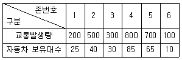
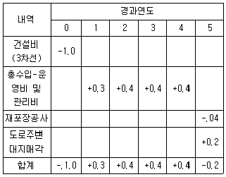
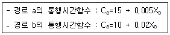
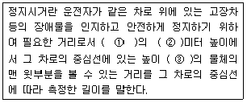
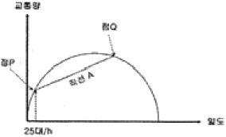
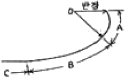
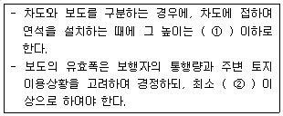
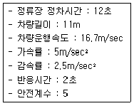
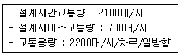
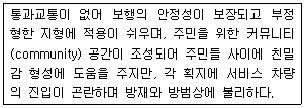

교통기사 (2010-05-09 기출문제)
1과목: 교통계획
1. 다음 중 일반적인 도시교통의 특징으로 옳지 않은 것은?
- 국가 및 지역교통에 비하여 단거리 교통이다.
- 대중교통수단의 발달로 대량수송이 가능하다.
- 통행료, 교통수단, 터미널 등에 의한 서비스를 제공한다.
- 도시 전역에 통행이 고루 분포하며, 교통체증이 발생하지 않는다.
(정답률: 100%)

2. 다음 중 개별행태모형에 해당하는 것은?
- 중력모형(Gravity model)
- 로짓모형(Logit model)
- 원단위법(Unit model)
- 디트로이트모형(Detroit model)
(정답률: 알수없음)
3. 다음 중 교통수요관리방안(TDM)으로 적합하지 않은 것은?
- 근무스케줄 단축
- 도심통행료 부과
- 출ㆍ퇴근 시간 조정
- 주차공간 공급 확대
(정답률: 73%)
4. 다음 중 차량 번호판 조사의 내용으로 옳지 않은 것은?
- 차량의 차종
- 차량의 번호
- 차량의 통행목적
- 차량의 통과시각
(정답률: 알수없음)
5. 다음 중 기ㆍ종점 조사 자료에 대하여 신뢰성에 대한 검증 및 보완을 위한 목적으로 실시하는 것은?
- 가구면접조사
- 스크린라인조사
- 터미널조사
- 노측면접조사
(정답률: 92%)
6. 다음 도로의 운영 방법 중 도로구간을 홀수차로로 구획하고 중앙의 한 개 차로를 좌회전 교통류를 처리하는데에 이용할 수 있도록 하는 기법은?
- 가변차로제
- 능률차로제
- 일방차로제
- 우선차로제
(정답률: 100%)
7. 다음 중 사람 통행 실태 조사방법에 해당하지 않는 것은?
- 가로변 면당(Roadside Interview)조사
- 운전자 우편설문(Driver Postcards)조사
- 가구방문(Home Interview)조사
- 확률적 배정(Probabilistic Assignment)조사
(정답률: 84%)
8. 다음 중 교통수요 4단계 추정법에 대한 설명으로 옳지 않은 것은?
- 각 단계별로 도출되는 분석결과에 대한 적절성을 검증하면서 순서적으로 추정해 간다.
- 과거의 일정한 시점을 기초로 모형화하므로 장래예측이 용이하다.
- 계획가나 분석가의 주관이 개입될 우려가 있다.
- 단계별로 적절한 모형의 선택이 가능하다.
(정답률: 92%)
9. 다음 중 교통존을 설정하는 기준으로 옳지 않은 것은?
- 존의 경계는 가급적 행정구역과 일치시킨다.
- 존 내부 통행을 최대화할 수 있도록 설정해야 한다.
- 존 내부의 사회적ㆍ경제적 특성이 균일해야 한다.
- 각 존의 가구수, 인구 및 통행량이 비슷한 것이 좋다.
(정답률: 93%)
10. 존 별 자동차 보유대수(X)와 교통발생량(Y)을 조사한 결과가 아래와 같을 때, 선형회귀분석법으로 교통발생 모형을 도출하여 자동차 보유대수가 100대인 존의 통행발생량을 구한 값으로 옳은 것은?

- 1268 통행
- 1168 통행
- 1103 통행
- 1003 통행
(정답률: 50%)
11. 다음 중 통행분포(Trip Distribution) 단계에서 사용하지 않는 예측 모형은?
- 프라타모형
- 간섭기회모형
- 엔트로피모형
- 카테고리분석모형
(정답률: 알수없음)
12. 다음 중 계획대상과 그 특성에 따라 계획하고자 하는 구체적 시설을 기준으로 교통계획을 분류한 것에 해당하는 것은?
- 장기교통계획
- 가로망계획
- 도시교통계획
- 교통축계획
(정답률: 80%)
13. 다음 중 보행자 시설별 주요 효과 척도의 연결이 옳지 않은 것은?
- 보행자도로 : 보행교통류율, 보행점유공간, 보행밀도
- 계단 : 계단높이, 보행점유공간
- 대기공간 : 보행점유공간
- 신호횡단보도 : 평균보행자지체, 보행점유공간
(정답률: 86%)
14. 도로건설에 따른 비용과 편익이 다음과 같을 때 이 도로 건설의 사업 타당성 분석 결과로 옳은 것은? (단, 단위는 억원이며, 이자율은 10%이다.)

- NPV＞0 이므로 적합한 사업이다.
- NPV＜0 이므로 부적합한 사업이다.
- 비용-편익이므로 부적합한 사업이다.
- 현재 상황으로는 알 수 없다.
(정답률: 100%)
15. 다음 중 대중교통의 일반적인 특성에 대한 설명으로 옳지 않은 것은?
- 수송이 대량ㆍ집약적이고 비용이 저렴한 편이다.
- 환경오염이 비교적 적다.
- 불특정 다수의 수송에 용이하다.
- 수송 경로의 유동성이 크다.
(정답률: 100%)
16. 다음 중 교통수요예측기법을 집계형 모형(aggregate model)과 비집계형 모형으로 분류하였을 때, 집계형 모형이 성명하려고 하는 변수는?
- 개인의 통행수
- 개인의 목적수
- 개인의 이용수단
- 평균가구특성
(정답률: 72%)
17. 두 존을 연결하는 경로 a와 b에 대한 통행시간함수가 아래와 같고 두 존 간의 총 통행수요(X)가 2000 통행일 때 각 경로별 통행배분량이 균형을 이루는 통행량은?

- Xa : 1400통행, Xb : 600통행
- Xa : 1200통행, Xb : 800통행
- Xa : 600통행, Xb : 1400통행
- Xa : 800통행, Xb : 1200통행
(정답률: 83%)
18. 통행분포(Trip Distribution) 단계에서 유출ㆍ유입 통행량이 같지 않고 총 통행량만 제약하기 위해 사용하는 모형은?
- 제약없는 중력모형
- 균일성장모형
- 프라타모형
- 이중제약 중력모형
(정답률: 50%)
19. 다음 중 통행 배정의 목적으로 가장 거리가 먼 것은?
- 기존 교통망 체계의 문제점 진단
- 장래 교통망 대안의 평가
- 목표연도별 교통시설 건설 사업에 대한 우선순위 결정
- O-D 통행량 산출을 위한 기초 자료제공
(정답률: 알수없음)
20. 평형배정모형에 있어 운전자가 이기적으로 자신의 통행시간만을 단축시키려는 의도가 결과적으로 모든 운전자에게 피해를 초래하는 현상을 무엇이라 하는가?
- IIA(Independence of Irrelevant Alternative)
- 브라에스의 역설(Braess's Paradox)
- 다운스-톰슨의 역설(Downs-Thomson Paradox)
- 루이스-모그리지의 명제(Lewis-Mogrdige Position)
(정답률: 73%)
2과목: 교통공학
21. 49대의 차량에 대한 속도조사ㅑ를 한 결과 평균 60kn/h, 분산 36을 얻었을 때, 이 교통류 속도의 모평균을 추정함에 있어 허용오차 ±0.5kph로 하기 위해 필요한 표본수는? (단, 신뢰수준은 95%이다.)
- 97대
- 272대
- 386대
- 554대
(정답률: 92%)
22. 교차로 지체시간 산출 모형에 대한 설명이 옳은 것은?
- Webster 모형은 차량당 평균 정지지체(Stopped delay)를 이용한다.
- HCM 모형은 차량당 평균 접근지체(Approach delay)를 이용한다.
- Webster 모형은 현장에서 직접 측정이 곤란하고, HCM 모형은 현장 조사가 용이하다.
- HCM 모형 ÷ Webster 모형 × 1.3의 관계가 성립한다.
(정답률: 60%)
23. A지점에서 B지점으로 이동하는 10분 동안 주행차량을 추월한 차량수가 5대, 주행차량이 추월한 차량수는 8대이며, B지점에서 A지점으로 이동하는 8분 동안 만난 반대방향 차량수가 200대이었을 때, A지점에서 B지점으로 이동하는 교통류의 교통량은 얼마인가?
- 약 692대/시
- 약 657대/시
- 약 678대/시
- 약 642대/시
(정답률: 64%)
24. 다음 중 정지시거에 대한 아래의 설명에서 괄호에 들어갈 말이 모두 옳은 것은?

- ①차로 위 ②1.0 ③10cm
- ①차로 위 ②1.2 ③15cm
- ①차로 중심선 위 ②1.0 ③15cm
- ①차로 중심선 위 ②1.5 ③10cm
(정답률: 알수없음)
25. 교통류 모형 중 수학적으로는 가장 단순하고 사용하기 편리하지만, 현실적인 혼잡밀도의 값을 나타내기가 어려운 것은?
- Greenberg 모형
- Greenshields 모형
- Underwood 모형
- Drake 모형
(정답률: 100%)
26. 신호교차로에서 주기가 120초, 녹색시간이 40초, 녹색시간에 통과한 차량이 평균 18대/차로이며 포화교통류율이 2,000대/시 일 때 포화도(v/c)는 얼마인가?
- 0.90
- 0.87
- 0.85
- 0.81
(정답률: 54%)
27. 중량이 1,000km이고 전체 단면이 3m2인 차량이 양호한 상태의 노면을 60kph의 일정한 속도로 달리다가 제동을 하여 감속하였다. 제동시 타이어와 노면의 마찰계수가 0.5라고 할 때, 다음의 설명 중 옳지 않은 것은?
- 주행저항이 고려된 초기 감속도는 약 -5.14m/sec2이다.
- 0~1초 사이의 감속도가 일정하다고 가정할 때, 감속 1초 후의 속도는 약 41.5kph, 감속도는 -5.08m/sec2이다.
- 최초감속 후 1초 동안 주행거리는 약 14.1m이다.
- 마찰계수가 0.25인 감속시, 주행저항이 고려된 초기 감속도는 -2.57m/sec2이다.
(정답률: 60%)
28. 다음 중 연결로 접속부의 구성요소로 보기 어려운 것은?
- 연결로
- 엇갈림 구간
- 연결로-일반도로 접속부
- 연결로-고속도로 접속부
(정답률: 62%)
29. 다음 중 일정 시간 동안 도로의 한 구간을 차지하는 모든 차량의 평균 속도로, 속도의 조화 평균값으로 나타내며 교통류의 분석에 이용되는 것은?
- 시간평균속도
- 설계속도
- 공간평균속도
- 자유속도
(정답률: 42%)
30. 어느 노로구간의 교통량이 1,200대/시간, 이 구간을 통행하는 차량의 평균속도가 30km/시간일 때의 밀도는?
- 40대/km
- 50대/km
- 100대/km
- 200대/km
(정답률: 알수없음)
31. 차량 속도의 변화에 따라 미끄럼 마찰계수의 변동폭이 가장 큰 노면 타이어상태에 해당하는 것은?
- 습윤-마모된 타이어
- 건조-양호한 타이어
- 건조-미모된 타이어
- 습윤-양호한 타이어
(정답률: 85%)
32. 완전 감응 신호기(full-actuated signal)의 기본적인 운영방식에 대한 설명으로 옳지 않은 것은?
- 모든 접근로에 검지기를 설치한다.
- 초기 녹색시간이 변하는 가변 초기 녹색시간을 갖는다.
- 어느 도로에도 call이 없으면 현재의 현시가 그대로 지속된다.
- 각 현시 끝에는 정해진 황색신호가 따른다.
(정답률: 60%)
33. 다음 중 차량의 시공도(Time-Space Diagram)에서 알 수 있는 사항이 아닌 것은?
- 차량의 속도
- 차량의 종류
- 차량의 위치
- 차량의 가속도
(정답률: 74%)
34. 4색 신호등에서 어느 경우에도 동시에 켜져서는 아니되는 2색의 등화는?
- 좌회전 화살표와 황색
- 황색과 적색
- 좌회전 화살표와 적색
- 녹색과 적색
(정답률: 92%)
35. 차량의 도착간격이 평균 0.5분/대이며 음지수분포를 따른다고 할 때, 임의의 1분 동안에 차량이 한 대도 도착하지 않을 확률로 옳은 것은?
- 약 13.5%
- 약 21.5%
- 약 50.0%
- 약 60.7%
(정답률: 25%)
36. 두 교차로 간을 주행하는 차량의 평균속도가 30km/h이고 옵셋이 10초, 두 교차로의 황색신호시간이 3초일 때 두 교차로간의 간격은? (단. 완전한 연속진행이 보장되는 경우임)
- 약 58m
- 약 83m
- 약 120m
- 약 300m
(정답률: 50%)
37. 3현시로 운영되는 신호교차로에서 각 현시별로 고려하여야 하는 현시율은 각각 0.3, 0.15, 0.25이다. 보행자가 없는 경우 Webster 방식에 의한 최적신호주기는? (단, 현시당 손실시간은 3초이다.)(
- 55초
- 62초
- 71초
- 89초
(정답률: 59%)
38. 양방향 2차로의 장대터널의 한 쪽 방향에서 차량들이 50km/h의 속도로 주행 중이며, 밀도는 25대/km이다. 이 때 승용차 한 대가 고장이 나서 10km/h로 주행을 시작했고 이 상황과 관련한 교통량-밀도 그림이 아래와 같을 때 설명으로 가장 거리가 먼 것은?

- 원점과 점P를 잇는 가상선의 기울기는 50lm/h일 것이다.
- 충격파는 직선A의 기울기이다.
- 터널 내 CCTV로 관측하니 고장난 승용차로 인하여 교통류가 일렬로 줄지어 10km/h로 가는 것이 관찰되었다.
- 터널을 나온 후, 고장난 승용차가 길어깨로 빠져나가자 선두교통류들은 즉시 속도는 50km/h, 밀도 25대/km로 복귀하였다.
(정답률: 80%)
39. 15km의 대중교통노선 구간에 필요한 차량규모를 알아보기 위하여 시험운행을 한 결과, 평균 운행속도가 20km/h, 배차간격이 6분이었다면 이 노선에 필요한 차량규모는?
- 10대
- 15대
- 20대
- 25대
(정답률: 75%)
40. 다음 중 서비스수준별 교통류의 상태에 대한 설명으로 옳지 않은 것은?
- A : 사용자 개개인들은 교통류 내의 다른 사용자의 출현에 실질적으로 영향을 받지 않는다.
- C : 교통류 내의 다른 차량과의 상호작용으로 인하여 통행에 상당한 영향을 받기 시작한다.
- E : 교통량이 조금 증가하거나 작은 혼란이 발생하여도 와해 상태가 발생한다.
- FFF : 과도한 교통수요로 혼잡이 심각한 상태이며 차량이 대상구간의 전방 신호교차로를 통과하는데 평균적으로 2주기 정도의 시간이 필요하다.
(정답률: 59%)
3과목: 교통시설
41. 다음 중 평면교차로에서의 도류화 설계를 위한 기본원칙으로 옳지 않은 것은?
- 곡선부는 적절한 곡선반경과 폭을 가져야 한다.
- 운전자가 한 번에 한 가지 이상의 의사결정을 하지 않도록 해야 한다.
- 교통제어시설은 고려하지 않고 교통섬을 설계한다.
- 속도와 경로를 점진적으로 변화시킬 수 있도록 접근로의 단부를 처리해야 한다.
(정답률: 100%)
42. 다음 중 도로의 구조 및 시설 기준에 관한 규칙에서 규정하고 있는 설계기준자동차에 해당하지 않는 것은?
- 승용자동차
- 중형자동차
- 대형자동차
- 세미트레일러
(정답률: 90%)
43. 다음 중 도로와 철도가 평면교차하는 경우 도로의 구조에 대한 기준으로 옳은 것은?
- 철도와의 교차각을 30도 이상으로 한다.
- 건널목 부분을 제외하고 건널목의 양측에서 각각 30m이내의 구간은 직선으로 한다.
- 건널목에서의 철도차량의 최고속도가 50km/h 미만인 경우, 가시구간의 길이는 110m 이하로 한다.
- 건널목 앞쪽 5m 지점에 있는 도로 중심선 위의 1m 높이에서 가장 멀리 떨어진 선로의 중심선을 볼 수 있는 곳까지의 거리를 선로방향으로 측정한 길이를 가시구간의 길이라 한다.
(정답률: 알수없음)
44. 인터체인지의 연결로 형식 중 좌직결 연결로(Left-direct Connection)에 관한 설명으로 옳지 않은 것은?
- 고속인 좌측차로에서 분ㆍ합류하므로 위험하다.
- 교통용량이 작아 이용교통량이 작은 곳에 적용한다.
- 대량의 고속교통류를 처리하며, 좌회전 교통이 주류인 곳에 적용한다.
- 본선 차도의 좌ㆍ우에 연결로가 교대로 존재하면 불필요한 엇갈림이 생긴다.
(정답률: 70%)
45. 다음 중 평면교차로 설계의 기본원리로 옳지 않은 것은?
- 상충의 횟수를 최소화 시킨다.
- 분ㆍ합류를 단순화시키고 일관성을 유지한다.
- 교통량이 많고 속도가 높은 교통류에 우선권을 부여한다.
- 상충지점의 면적을 최대화 시킨다.
(정답률: 94%)
46. 다음 중 시선유도표지에 대한 설명으로 옳지 않은 것은?
- 설치 높이는 노면에서 반사제의 중심까지 90cm를 표준으로 한다.
- 시선유도표지는 반사체, 반사체 틀 및 지주로 이루어진다.
- 반사체의 색은 노란색만을 사용한다.
- 설치간격은 직선부에서 최대 50m 정도이다.
(정답률: 77%)
47. 다음 그림에서 도로의 완화곡선부에 해당하는 것은?

- A 부분
- B 부분
- C 부분
- A와 B 부분
(정답률: 75%)
48. 다음 중 보도의 설치 기준에 대한 아래의 설명에서 ①과 ②에 들어갈 말이 모두 옳은 것은?

- ①20cm ②1.5m
- ①25cm ②1.5m
- ①20cm ②2.0m
- ①25cm ②2.0m
(정답률: 64%)
49. 다음 중 횡단보도교(육교)의 구조 및 설치기준에 대한 설명으로 옳지 않은 것은?
- 1분당 보행지수가 80인 미만인 경우 폭은 최소 1.5m 이상으로 한다.
- 보도교의 양옆에는 높이 80cm, 폭 5cm 이상인 난간을 설치하여야 한다.
- 보도교의 높이가 3m를 초과하는 경우에는 계단폭 이상인 계단창을 설치하여야 한다.
- 각 계단모서리의 발디딤부분에는 미끄럼방지처리를 한다.
(정답률: 50%)
50. 다음 중 노면의 종류에 따른 횡단경사 기준이 옳지 않은 것은? (단, 평경사가 설치되는 구간은 고려하지 않음)
- 비포장도로 : 3.0% 이상 6.0% 이하
- 간이포장도로 : 2.0% 이상 4.0% 이하
- 아스팔트포장도로 : 1.5% 이상 2.0% 이하
- 시멘트포장도로 : 1.0% 이상 1.5% 이하
(정답률: 58%)
51. 다음 중 길어깨에 대한 설명으로 옳지 않은 것은?
- 유사시 정차하는 차량 및 긴급차량에게 편의를 제공하고 차도 포장부의 구조적 기능을 보호하는 시설이다.
- 터널에 설치하는 길어깨의 폭은 고속도로의 경우 1m 이상으로, 일반도로의 경우에는 0.5m 이상으로 할 수 있다.
- 소형차도로인 고속도로에서 차도의 양 쪽 길어깨 폭원은 최소 2m 이상이어야 한다.
- 길어깨는 기능상 자동차 하중을 견딜 수 있어야 하고, 일반도로일지라도 포장을 하는 것이 바람직하다.
(정답률: 54%)
52. 다음 중 노상주차장의 구조ㆍ설비기준으로 옳지 않은 것은?
- 주간선도로에 설치하여서는 아니된다.
- 종단경사도가 4%를 초과하는 도로에 설치하여서는 아니된다.
- 고속도로ㆍ자동차 전용도로 또는 고가도로에 설치하여서는 아니된다.
- 너비 10m 미만의 도로에 설치하여서는 아니된다.
(정답률: 알수없음)
53. 다음 중 차량 한 대당 주차소요면적이 가장 큰 각도주차 형식은? (단, 소형차를 기준으로 함)
- 30° 전진주차
- 45° 전진주차
- 60° 전진주차
- 90° 전진주차
(정답률: 82%)
54. 다음과 같은 조건을 가진 버스의 최소 배차 간격(Mininmum Headway)은?

- 약 28초
- 약 33초
- 약 35초
- 약 38초
(정답률: 62%)
55. 다음 중 도시지역 차도의 평면곡선부에 도로가 위치하는 경우 최대 편경사는 얼마 이하로 두어야 하는가?
- 4%
- 6%
- 8%
- 10%
(정답률: 90%)
56. 도시지역 일반도로의 설계속도가 60km/h 이상이고 70km/h 미만인 경우 차로의 최소 폭 기준은 얼마인가?
- 2.75m 이상
- 3.00m 이상
- 3.25m 이상
- 3.50m 이상
(정답률: 63%)
57. 연결로의 설계속도를 적용할 때의 주의사항에 대한 설명으로 옳지 않은 것은?
- 이용 교통량이 많을 것으로 예상되는 연결로는 분선의 설계기준을 적용하여 설계한다.
- 본선의 분류단 부근에는 보통 주행속도의 변화가 있으므로, 속도변화에 적합한 완화구간을 설치하여 운전자가 주행속도를 자연스럽게 바꿀 수 있도록 유도한다.
- 연결로의 실제 주행속도는 선형에 따라 변하므로 편경사 등의 기하구조를 설계할 때는 실제 주행속도에 대한 고려가 필요 없다.
- 하급도로 설계속도가 60km/h 이하인 경우의 연결로는 루프연결로일 경우 설계속도의 최소값으로 30km/h를 채택할 수 있다.
(정답률: 100%)
58. 아래와 같은 교통조건을 고려하여 도로를 건설하고자 할 때 필요한 차로수는 얼마인가?

- 1차로
- 2차로
- 3차로
- 5차로
(정답률: 85%)
59. 길이 1천미터 이상의 터널 또는 지하차도에서 오른쪽 길어깨 폭이 얼마 미만을 경우 비상주차대를 설치하여야 하는가?
- 2.0m
- 2.5m
- 3.0m
- 3.5m
(정답률: 19%)
60. 다음 중 불완전입체교차로의 가장 대표적인 유형으로 형태가 단순하고 용지가 적게 들며 비용이 저렴하고 교통의 우회거리도 가장 짧아 경제적으로 유리한 형태는?
- 다이아몬드형
- 불완전클로버형
- 트럼펫형
- 준직결+평면교차형
(정답률: 92%)
4과목: 도시계획개론
61. 도시계획시설에 대하여 도시계획시설 결정의 고시일부터 최대 얼마 이내에 대통령령으로 정하는 바에 따라 단계별 집행계획을 수립하여야 하는가?
- 1년
- 2년
- 3년
- 5년
(정답률: 28%)
62. 다음 중 아래의 설명과 같은 특징을 갖는 가로 형태는?

- T자형
- 격자형
- Loop형
- 쿨데삭형
(정답률: 알수없음)
63. 다음 중 국토의 계획 및 이용에 관한 법률상 관리지역에 해당하지 않는 것은?
- 계획관리지역
- 생산관리지역
- 보전관리지역
- 개발관리지역
(정답률: 알수없음)
64. 도시공간구조를 형성하는데에 도시의 중심은 하나가 아니라 도시의 성장에 따라 발생한 핵이 복수의 중심을 형성한다는 다핵심이론을 주장한 학자는?
- E. W. Burgess
- H. Hoyt
- Kevin Lynch
- C. D. Harris & E. L. Ullman
(정답률: 42%)
65. 다음 중 하워드(E. Howard)가 제시하여 런던 교외의 도시인 래치워스(Letohworth)와 웰인(Welwyn)에서 실현되었으며, 위성도시론의 발전에 크게 기여한 계획안은?
- 근린주구론
- 전원도시론
- 지역계획론
- 선상도시론
(정답률: 70%)
66. A도시의 인구가 10만명, B도시의 인구가 40만명이고 두 도시간의 거리가 9km일 때 A도시로부터 세력 분기점까지의 거리는 얼마인가?
- 3km
- 4km
- 5km
- 6km
(정답률: 59%)
67. 다음 중 진화하는 도시(Cities in Evolution)를 저술하였으며, 공업도시에서 생기는 문제의 해결을 생물학적 방법으로 설명하고 도시인구, 고용, 생활 등의 조사와 이에 대한 분석으로 과학적인 도시계획기술의 발전 필요성을 주장한 학자는?
- Raymond Unwin
- Tony Garnier
- Clarence Stein
- Patrick Geddes
(정답률: 알수없음)
68. 다음 중 토지이용과 교통의 관계에 대한 설명으로 옳지 않은 것은?
- 토지이용과 교통은 상호의존적으로 작용하며 순환적인 관계를 가진다.
- 토지이용체계는 동적으로 변하기 때문에 교통의 토지이용에 대한 영향을 떼내어 관찰하기가 곤란하다.
- 어느 도시가 성장할 때 교통시설이 도시 내에 설치되는 위치에 따라 도시의 성장방향 결정에 영향을 준다.
- 활동의 공간적 입지는 활동패턴과 통행패턴에 영향을 주지만, 교통체계에는 그다지 영향을 주지 않는다.
(정답률: 84%)
69. 고대 그리스 도시에서 교역과 정치활동의 중심지였던 도심광장을 무엇이라고 하는가?
- 포럼(Forum)
- 아고라(Agora)
- 시데롱(Siedelung)
- 휘닉스(Ponyx)
(정답률: 60%)
70. 다음 중 도로에 대한 설명으로 옳지 않은 것은?
- 도로는 망으로 구성됨으로써 지역과 시설을 연계한다.
- 가구(街區)나 근린주구 등의 도시공간을 구획한다.
- 도로는 위계와 기능에 따라 계층적 구조를 갖는다.
- 도시환경정비에 있어 위생시설로써 중요하다.
(정답률: 70%)
71. 다음 중 지역의 경제활동 예측모형인 경제기반모형에 대한 설명으로 옳은 것은?
- 지역의 산업은 기반부문과 비기반부문으로 구성되며 기반부문은 수입산업, 비기반부문은 수출산업으로 분류한다.
- 경제성장요인을 체계적으로 분류하여 성장요인이 지역경제에 미치는 영향을 분석한다.
- 입지계수(LQ)가 1인 산업의 생산품이나 서비스는 지역의 수요만을 충당하는 사업으로 볼 수 있다.
- 어떤 산업의 생산량은 다른 산업을 위한 상품과 최종소비하는 생산물의 합과 동일하다.
(정답률: 알수없음)
72. 다음 중 샤핀(F. S Chapin)이 제시한 토지이용의 결정 요인 중 공공 이익의 요소에 해당하지 않는 것은?
- 쾌적성
- 보건성
- 균일성
- 편리성
(정답률: 50%)
73. 특별시ㆍ광역시ㆍ시 또는 군의 관할 구역에 대하여 기본적인 공간구조와 장기발전방향을 제시하는 종합계획으로 도시관리계획 수립의 지침이 되는 계획은?
- 도시계획
- 광역도시계획
- 도시기본계획
- 지구단위계획
(정답률: 알수없음)
74. 총 인구가 40000인이고 순인구밀도는 100인/ha, 공공용지율이 20%인 주거지역의 총 면적은 얼마인가?
- 320ha
- 400ha
- 500ha
- 600ha
(정답률: 알수없음)
75. 다음 중 도로의 기능별 분류에 해당하지 않는 것은?
- 간선도로
- 이면도로
- 국지도로
- 집산도로
(정답률: 84%)
76. 다음 중 용도지역별 도로율 기준이 옳은 것은?
- 녹지지역은 10% 이상 20% 미만이며, 이 경우 주간선 도로의 도로율은 5% 이상 10% 미만이어야 한다.
- 주거지역은 20% 이상 30% 미만이며, 이 경우 주간선 도로의 도로율은 10% 이상 15% 미만이어야 한다.
- 상업지역은 20% 이상 30% 미만이며, 이 경우 주간선 도로의 도로율은 10% 이상 15% 미만이어야 한다.
- 공업지역은 20% 이상 30% 미만이며, 이 경우 주간선 도로의 도로율은 5% 이상 10% 미만이어야 한다.
(정답률: 알수없음)
77. 다음 중 고시 및 주거환경정비법에 따라 정비기반시설이 열악하고 노후ㆍ불량건축물이 밀집한 지역에서 주거환경을 개선하기 위하여 시행하는 것은?
- 주거환경개선사업
- 주택재개발사업
- 주택재건축사업
- 도시환경정비사업
(정답률: 알수없음)
78. 다음 외국의 토지이용규제 수단들 중 대상지역에 대하여 일률로 용적율을 정하고 이를 초과하여 건설하려는 자는 그 초과분에 따른 과징금을 공공단체에 지불하여야 하는 제도는?
- Incentive zoning
- TDR(Transfer of Development Rights)
- PLD(Plafond Legal de Densite)
- ZUP(Zone a Urbaniser en Priorite)
(정답률: 39%)
79. 다음 중 토지와 시설에 대한 물리적 요소에 해당하지 않는 것은?
- 밀도
- 배치
- 동선
- 활동
(정답률: 알수없음)
80. Hook 신도시계획의 네 가지 기본 요소로 옳지 않은 것은?
- 자동차와 보행자를 분리하는 도로망 체계
- 시가화 지역과 농촌 지역의 통합시도
- 도시성(urbanity)의 향상
- 도시 인구구성의 다양화
(정답률: 알수없음)
5과목: 교통관계법규
81. 도로법령에 따른 서울특별시 도로원표의 위치는?
- 청와대 광장의 중앙
- 세종로 광장의 중앙
- 시청 앞 광장의 중앙
- 서울역 광장의 중앙
(정답률: 80%)
82. 다음 중 국토의 계획 및 이용에 관한 법률에 따른 중앙도시계획위원회에 대한 설명으로 옳지 않은 것은?
- 도시계획에 관한 조사 - 연구를 수행하기 위하여 국토해양부에 중아도시계획우이원회를 둔다.
- 중앙도시계획위원회의 위원장과 부위원장은 위원 중에서 국토해양부장관이 임명하거나 위촉한다.
- 중앙도시계획우이원회는 위원장ㆍ부위원장 각 1인을 포함하여 10인 이상 20인 이내의 위원으로 구성한다.
- 위원장은 중앙도시계획위원회의 업무를 총괄하며, 중앙도시계획위원회의 의장이 된다.
(정답률: 75%)
83. 총 중량이 2,000kg 미만인 자동차를 총 중량이 그의 3배 이상인 자동차(견인자동차가 아닌 자동차)로 견인하여 도로(고속도로 제외)를 통행하는 경우의 속도 기준은?
- 매시 15km이내
- 매시 20km이내
- 매시 25km이내
- 매시 30km이내
(정답률: 30%)
84. 다음 중 도로교통법에 규정된 원동기장치자전거에 대한 설명으로 옳은 것은?
- 자동차관리법의 규정에 의한 이륜자동차 중 배기량이 125cc 이하인 이륜차를 의미한다.
- 배기량이 50cc 이하인 자동차를 포함한다.
- 원동기를 장착한 자전거를 의미한다.
- 자동차관리법의 규정에 의한 자동차의 개념에 포함된다.
(정답률: 80%)
85. 부설주차장이 대통령령이 정하는 규모 이하인 때에는 주차수요를 유발하는 시설물의 부지 인근에 단독 또는 공동으로 부설주차장을 설치할 수 있다. 이 경우 주차수요를 유발하는 시설물의 부지 인근의 범위 기준으로 옳은 것은? (단, 지방자치단체의 조례로 정할 수 있는 경우는 고려하지 않음)
- 당해 부지의 경계선으로부터 부설주차장의 경계선까지의 직선거리 300m 이내
- 당해 부지의 경계선으로부터 부설주차장의 경계선까지의 직선거리 450m 이내
- 당해 부지의 경계선으로부터 부설주차장의 경계선까지의 직선거리 500m 이내
- 당해 부지의 경계선으로부터 부설주차장의 경계선까지의 직선거리 600m 이내
(정답률: 50%)
86. 다음 중 도로교통법에 따른 횡단보도의 설치기준이 옳지 않은 것은?
- 지방경찰청장은 횡단보도에 횡단보도표시와 횡단보도 표지판을 설치한다.
- 횡단보도를 설치하고자 하는 도로의 표면이 포장이 되지 아니하여 횡단보도표시를 할 수 없는 때에는 횡단보도의 너비를 표시하는 보조표지와 횡단보도표지판을 설치하여야 한다.
- 횡단보도는 육교ㆍ지하도 및 다른 횡단보도로부터 100m 이내에는 설치하여서는 아니된다.
- 횡단보도를 설치하고자 하는 장소에 횡단보행자용 신호기가 설치되어 있는 경우에는 횡단보도표시를 설치한다.
(정답률: 알수없음)
87. 다음 중 부설주차장의 설치대상시설물 종류에 따른 설치기준이 옳지 않은 것은?
- 의료시설(정신병원ㆍ요양소 및 격리병원 제외) : 시설면적 150m2당 1대
- 숙박시설 : 시설면적 150m2당 1대
- 판매시설 : 시설면적 150m2당 1대
- 방송국 : 시설면적 150m2당 1대
(정답률: 62%)
88. 다음 중 도로교통법상 모든 차의 운전자는 소방용 기계 및 기구가 설치된 곳으로부터 최대 몇 미터 이내의 곳에는 차를 주차시켜서는 아니되는가?
- 3m 이내
- 4m 이내
- 5m 이내
- 7m 이내
(정답률: 82%)
89. 토지의 이용 및 건축물의 용도ㆍ건폐율ㆍ용적율ㆍ높이 등에 대한 용도지역의 제한을 강화 또는 완화하여 적용함으로써 용도지역의 기능을 증진시키고 미관ㆍ경관ㆍ안전 등을 도모하기 위하여 도시관리계획으로 결정하는 지역을 무엇이라고 하는가?
- 개발밀도관리구역
- 용도구역
- 기반시설부담구역
- 용도지구
(정답률: 67%)
90. 다음 중 국가교통안전기본계획의 원칙적인 수립권자와 수립기간이 모두 옳은 것은?
- 지방경찰청장, 3년
- 국토해양부장관, 5년
- 지방경찰청장, 10년
- 국토해양부장관, 10년
(정답률: 알수없음)
91. 다음 중 도시교통정비촉진법에 따른 교통시설에 해당하는 것으로만 나열된 것은?
- 도로, 주차장, 철도역
- 도로, 차고, 안전지대
- 주차장, 항만, 신호기
- 도로, 공항, 안전시설
(정답률: 65%)
92. 시장은 도시교통의 원활한 소통과 대기오염의 개선 및 교통시설의 효율적인 이용을 위하여 관할 지역 안의 일정한 지역에서 교통수요관리를 할 수 있다. 이때 통행량의 분산 또는 감소를 위하여 대통령령이 정하는 사항에 해당하지 않는 것은?
- 대중교통수단 이용 안내를 위한 정보망 구축
- 보행자 전용 지구의 지점 및 운용
- 대중교통 전용 지구의 지정 및 운용
- 자동차의 운행제한에 관한 사항
(정답률: 42%)
93. 다음 중 도로법에 따른 자동차 전용도로에 대한 설명으로 옳지 않은 것은?
- 관리청은 교통이 현저히 폭주하여 차량의 능률적인 운행에 지장이 있는 도로(고속국도 포함)에 대하여 자동차 전용도로를 지정할 수 있다.
- 자동차 전용도로를 지정함에 있어서 도로의 관리청이 국토해양부장관이면 경찰청장의 의견을 들어야 한다.
- 자동차 전용도로를 지정할 때에는 해당 구간을 연결하는 일반 교통용의 다른 도로가 있어야 한다.
- 자동차 전용도로를 지정하고자 하는 도로에 둘 이상의 관리청이 있으면 관계되는 관리청이 공동으로 지정하여야 한다.
(정답률: 50%)
94. 교통유발부담금의 부과대상 시설물의 규모 기준은 각층 바닥면적을 합한 면적이 최소 얼마 이상인 시설물인가? (단, 지방자치단체의 조례로 조정이 가능하거나 주택법에 따른 주택단지에 위치한 시설물로서 도로변에 위치하지 아니한 시설물인 경우는 고려하지 않음)
- 500m2 이상
- 1000m2 이상
- 2000m2 이상
- 3000m2 이상
(정답률: 알수없음)
95. 다음 중 도로교통법상 모든 차의 운전자가 앞지르기를 하지 못하는 장소에 해당하는 것은?
- 도시지역 도로
- 다리 위
- 자동차 전용도로
- 지방지역 도로
(정답률: 85%)
96. 다음 중 도로교통법에서 규정하는 통행의 금지 및 제한에 관한 설명으로 옳지 않은 것은?
- 지방경찰청장은 도로에서의 위험을 방지하고 교통의 안전과 원활한 소통을 확보하기 위하여 필요하다고 인정하는 때에는 구간을 정하여 보행자나 차마의 통행을 금지하거나 제한할 수 있다.
- 경찰서장은 도로에서의 위험을 방지하고 교통의 안전과 원활한 소통을 확보하기 위하여 필요하다고 인정하는 때에는 우선 보행자나 차마의 통행을 우선 금지하거나 제한한 후 그 도로관리자와 협의하여 금지 또는 제한의 대상과 구간 및 기간을 정하여 도로의 통행을 금지하거나 제한할 수 있다.
- 자치경찰공무원은 도로의 파손, 화재의 발생이나 그 밖의 사정으로 인한 도로에서의 위험을 방지하기 위하여 긴급한 필요가 있다고 인정되는 때에는 필요한 한도안에서 보행자나 차마의 통행을 일시 금지하거나 제한할 수 있다.
- 지방경찰청장이 교통의 안전과 원활한 소통을 확보하기 위하여 필요하다고 인정되어 구간을 정하여 보행자나 차마의 통행을 금지하거나 제한을 하고자 하는 때에는 국토해양부령이 정하는 바에 의하여 그 사실을 공고하여야 한다.
(정답률: 47%)
97. 다음 중 주차장법규에 따른 지하식 또는 건축물식 노외주차장의 차로 기준에 대한 설명으로 옳지 않은 것은? (단, 자동차용 승강기로 운반된 자동차가 주차구획까지 자주식으로 들어가는 노외주차장의 경우는 고려하지 않음)
- 높이는 주차바닥면으로부터 2.3m 이상으로 하여야 한다.
- 굴곡부는 자동차가 5m(같은 경사로를 이용하는 주차장의 홈주차대수가 50대 이하인 경우에는 5m) 이상의 내변방경으로 회전이 가능하도록 하여야 한다.
- 경사로의 종단경사도는 직선부분에서는 17%, 곡선부분에서는 14%를 초과하여서는 아니된다.
- 주차대수규모가 50대 이상인 경우의 경사로는 너비 6m 이상인 2차선의 차로를 확보하거나 진입차로와 진출차로를 통합하여야 한다.
(정답률: 알수없음)
98. 도로법상 관리청은 도로 구조의 손궤 방지, 미관 보존 또는 교통에 대한 위험을 방지하기 위하여 도로경계선으로부터 얼마를 초과하지 아니하는 범위에서 대통령령으로 정하는 바에 따라 접도구역으로 지정할 수 있는가?
- 20m
- 30m
- 40m
- 50m
(정답률: 알수없음)
99. 다음 중 도로교통법규에 따른 안전표지의 종류에 해당하지 않는 것은?
- 주의표지
- 위험표지
- 보조표지
- 지시표지
(정답률: 55%)
100. 타공사나 타행위로 인하여 필요하게 된 도로공사의 비용은 타공사나 타행위의 비용을 부담하여야 할 자에게 그 전부 또는 일부를 부담하도록 하는 것을 무엇이라 하는가? (단, 도로법에 규정된 내용을 따른다.)
- 수익자부담금
- 이용자부담금
- 원인자부담금
- 손궤자부담금
(정답률: 알수없음)
6과목: 교통안전
101. 도로를 주행하다가 갑자기 터널에 들어가면 눈이 적응하기 위해서 약간의 시간이 소요된다. 이렇게 밝은 곳에서 어두운 곳으로 이동할 때 일어나는 현상을 무엇이라 하는가?
- 암순응
- 명반응
- 인지한계
- 착시현장
(정답률: 75%)
102. 다음 중 야간에 발생하는 교통사고를 감소하기 위한 대책으로 가장 거리가 먼 내용은?
- 조명시설의 신설 또는 증설
- 노면 재포장 또는 차로폭의 재조정
- 곡선부 시선유도표지 설치
- 주의표지 설치
(정답률: 알수없음)
103. 다음 중 차량용 신호등의 설치기준이 아닌 것은?
- 1일 중 교통이 가장 빈번한 8시간 동안 주도로의 자동차 통행량이 시간당 600대(양방향의 합계) 이상이고 부도로에서의 자동차 진입량이 시간당 200대 이상인 교차로의 경우
- 신호등의 설치간격이 300m 이상으로 인접 신호등과의 연동효과를 기대할 수 없는 경우
- 1일 중 교통이 가장 빈번한 8시간 동안 주도로에 설치된 횡단보도의 통행량이 1시간 동안 150인을 넘는 경우
- 학교 앞 300m 이내에 신호등이 없고 통학시간대 자동차 통행시간 간격이 1분 이내인 경우
(정답률: 알수없음)
104. 어느 도로의 용량이 2,000대/시, 자유통행시간이 1시간이다. 통행량이 2,000대인 경우 BPR의 통행량-속도 함수식을 이용하여 구한 통행시간으로 옳은 것은?
- 0.86시간
- 1.0시간
- 1.15시간
- 1.2시간
(정답률: 50%)
1⑤. 다음 도로의 주명기구에 관한 설명 중 ()안에 들어갈 말로 옳은 것은?
- 5°
- 7°
- 10°
- 12°
(정답률: 79%)
106. 다음 중 운전자의 일반적인 행동 특성에 대한 설명으로 가장 옳은 것은?
- 앞차의 거동을 따라하지 않으려고 한다.
- 익숙하지 않은 도로구조를 보면 빠른 판단이 가능하다.
- 긴급시에는 한 번에 하나의 조작 밖에 하지 못한다.
- 장시간동안 자극과소상태가 되면 반응은 빨라진다.
(정답률: 92%)
107. 다음 중 종합교통정보센터에 대한 설명으로 옳은 것은?
- 서울, 부산, 대구, 인천, 대전에 1개소씩 설치되어 있다.
- 교차로에 설치된 차량용 전자신호기만 직접 제어한다.
- 필요한 곳에 검지기 및 CCTV를 설치하고 있다.
- 앞으로 중앙집중식 제어방법으로 개선하여 하고 있다.
(정답률: 85%)
108. 다음 중 일방통행을 실시하여 감소시킬 수 있는 사고 유형과 가장 거리가 먼 것은?
- 측면충돌사고
- 정면충돌사고
- 추돌사고
- 단독사고
(정답률: 47%)
109. 구간길이가 1km인 도로에서 10년 동안 사망사고 3건, 부상사고 10건, 대물피해사고가 60건 발생하였다. 이 도로의 일평균교통량이 6,000대일 때의 교통사고율은? (단, 교통사고 피해정도에 의한 방법을 따르며, 심각도 계수는 사망사고는 12, 부상사고는 3으로 가정한다.)
- 약 4.75건
- 약 5.25건
- 약 5.75건
- 약 6.25건
(정답률: 67%)
110. 다음 중 어떤 장소에서 짧은 시간 동안 수시로 충돌에 근접하는 교통현상을 관측하여 그 장소의 교통사고위험성을 평가하는 방법은?
- 회귀분석모형
- 실험계획조사
- 인접접근속도분석
- 교통상충조사
(정답률: 알수없음)
111. 다음 중 과속방지턱(speed hump)이 갖추어야 할 기능으로 적합하지 않은 것은?
- 일반적으로 30km/h 이하의 통과 속도에서는 비교적 물리적인 저항이 적고 완만하게 통과할 수 있어야 한다.
- 차량이 과속으로 주행할 경우 차량에게 상처나 끌림, 요동을 일으키도록 과속방지턱의 높이를 조정하여야 한다.
- 연속형 과속방지턱은 20~90m의 간격으로 설치함을 원칙으로 한다.
- 포장재료나 도색 등을 이용하여 주변의 도로 환경과 조화를 도모할 경우에는 고로 경관 향상에 기여할 수 있다.
(정답률: 84%)
112. 어느 차량이 곡선반경 250m인 평면곡선부를 90km/h의 속도로 주행하고 있을 때 미끄러지지 않기 위한 편경사는? (단, 도로의 마찰계수는 0.2이다.)
- 약 0.02
- 약 0.04
- 약 0.06
- 약 0.08
(정답률: 알수없음)
113. 도로교통사고의 일반적 특성에 대한 설명으로 옳지 않은 것은?
- 도로교통사고는 자주 발생하지 않는 희박한 사건(rare event)으로 볼 수 있다.
- 도로교통사고는 언제 발생할지 예측하기 어려운 시간적 임의성(time random event)을 지닌다.
- 도로교통사고는 어디서 발생할지 예측하기 어려운 공간적 임의성(space random event)을 지닌다
- 도로교통사고는 주기적(cyclic)으로 발생하기 때문에 사고 유형과 발생 가능 지점의 예측이 가능하다.
(정답률: 84%)
114. 다음 중 사고전이현상(accident migration)에 대한 설명으로 옳은 것은?
- 어느 지점에서의 교통안전개선 기법 적용이 인접한 다른 곳의 사고를 오히려 증가시키는 현상을 말한다.
- 어느 교차로의 평균 교통사고율을 이용하여 교통조건이 유사한 다른 교차로에서의 사고율을 파악할 수 있다는 이론을 말한다.
- 어느 지역의 평균 교통사고율을 이용하여 도로조건이 유사한 다른 지역에서의 사고율을 파악할 수 있다는 이론을 말한다.
- 어느 위험한 운전자가 주행 중 연쇄적으로 사고를 초래하는 현상을 말한다.
(정답률: 77%)
115. 다음 중 평면교차로 설계의 주요원리와 거리가 먼 것은?
- 충돌지점수와 사고기회를 최소화한다.
- 공간적ㆍ시간적으로 충돌지점을 통합한다.
- 차량경로를 명확하게 제시하도록 한다.
- 가장 많은 교통량과 높은 속도를 갖는 교통류를 우선적으로 처리한다.
(정답률: 75%)
116. 교통사고의 유발 요인을 인적요인, 차량요인, 환경적요인으로 분류할 때, 다음 중 인적요인(人的要因)과 가장 관계가 먼 것은?
- 운전자의 능력
- 운전자의 운전습관
- 운전자의 가족관계
- 운전자의 생리적 조건
(정답률: 93%)
117. 도로표지의 설치기준에 대한 설명이 옳지 않은 것은?
- 도로이용자가 행동방향을 결정할 수 있는 거리에서 읽을 수 있는 크기이어야 한다.
- 도로이용자의 주의를 끌 수 있도록 뚜렷하여야 한다.
- 곡선부 주행에 유의하도록 곡선부에 도로표지를 설치한다.
- 글자ㆍ기호는 밤에는 잘 읽을 수 있도록 반사되어야 한다.
(정답률: 85%)
118. 영국의 스미드(R. J. Smeed)가 1938년에 발표한 교통사고 예측모형에서, 교통사고 사망자수를 나타내는데 이용한 변수로만 나열된 것은?
- 인구수, 자동차 보유대수
- 자동차 보유대수, 면허소지자 수
- 인구수, 국민 총 생산
- 도로길이, 화물유통량
(정답률: 100%)
119. 한 차량이 15m 미끄러져 도로의 맨 끝으로부터 수직거리 10m, 수평거리 15m 지점에 추락하였을 때 이 차량의 미끄러지기 직전의 속도는 얼마인가? (단, 노면의 마찰계수는 0.7이며 중력가속도는 10m/sec2으로 가정한다.)
- 62.8kph
- 69.1kph
- 73.9kph
- 80.3kph
(정답률: 알수없음)
120. 다음 중 속도제한구간의 설정과 제한속도의 결정에 관한 설명으로 옳지 않은 것은?
- 도로 및 교통조건에 적합한 속도보다 제한속도가 너무 높거나 낮으면 제한속도를 무시하는 경향이 있다.
- 단속가능한 정도의 속도제한이 효과적이다.
- 속도제한은 어떠한 도로조건ㆍ교통조건에서도 동일한 타당성을 갖는다.
- 실제 현장의 교통여건에 맞는 제한속도는 사고를 줄일 수 있다.
(정답률: 78%)